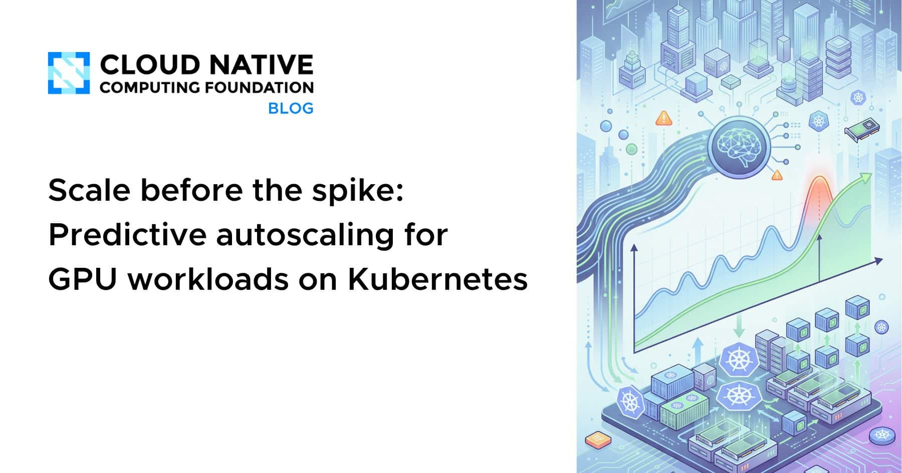
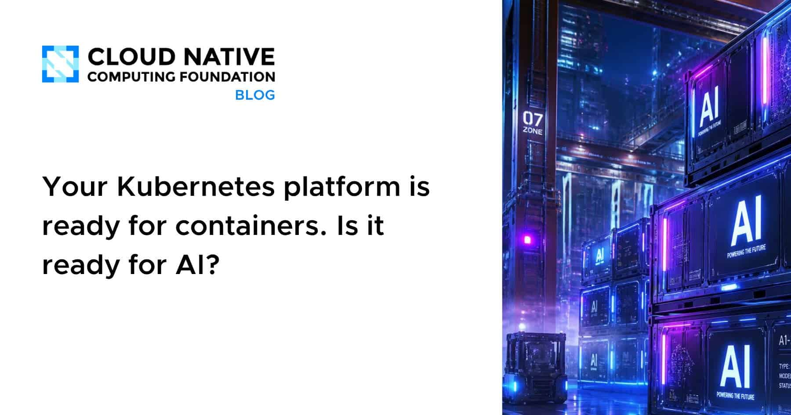
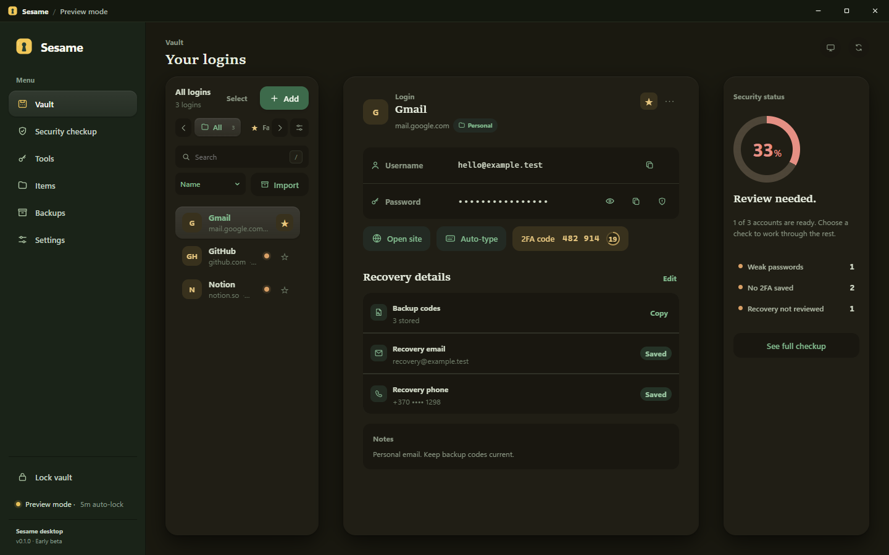

🔥 Top 3 (must read)
Scale before the spike: Predictive autoscaling for GPU workloads on Kubernetes
A team got paged at 3 AM after a production service crashed under a traffic spike, with hundreds of pending pods and 15–20% error rates. The post walks through moving from reactive autoscaling to predictive autoscaling, which scales up before the spike hits. Why it matters: this is a real SRE case study on Kubernetes scaling, straight in your distributed-systems and DevOps interest area.

Ship It Weekly: Cloudflare saves 100TB of RAM, AWS adds a fourth London AZ, Route 53 self-service, Go 1.27, and hidden infrastructure assumptions
Cloudflare freed about 100 terabytes of RAM with five low-level cache optimizations behind 1.1.1.1, and AWS added a fourth Availability Zone in London — which broke automation that quietly assumed there would always be three. Also covers Route 53 cross-account DNS self-service, AKS eBPF routing, and Go 1.27. Why it matters: the "hidden assumptions" story is a great team discussion topic — most infra automation has a hardcoded number like that somewhere.
Your Kubernetes platform is ready for containers. Is it ready for AI?
Platform teams that built solid container platforms are now asked to run AI workloads on them, and the post covers what changes: different resource shapes, GPUs, and scheduling needs. Why it matters: as an EM with cloud-infra interest, this maps the gap your platform team will likely face when AI workloads arrive.

🎯 For me
Today is an infrastructure day: both CNCF posts (predictive GPU autoscaling, AI-ready platforms) and the Ship It Weekly roundup hit your Kubernetes/DevOps/SRE interest directly. Nothing today touches Node.js, React, Flutter, or testing tooling.
💡 App ideas & indie builds
SubSmith – Turn your own videos into language-learning material
(discussion) — Takes videos you already watch and turns them into study material with subtitles. The user problem: language learners study best from content they actually enjoy, not textbook dialogs. Very close to your day job at a language-learning company — worth reading the 51 comments for what users ask for.
Sesame – a local-first, open-source password manager
(discussion) — A password manager that keeps data on your device instead of a cloud account. The user problem: people who don't trust cloud vaults after the big breach stories. Shows there is still room for "local-first + open source" versions of crowded categories.

A tool that turns any job posting into a timed mock interview inside your IDE
Paste a job posting, get a timed coding interview matched to it, inside the editor. The user problem: interview prep is generic while job postings are specific. Nice example of building where the user already works (the IDE) instead of another web app.
R
Engineer who "sucked at marketing" treated it like an engineering problem: 1.8M Reddit views in two weeks
Not an app, but a playbook: iterate on marketing in public the way you debug code, with AI as the "growth team". Useful the day you ship one of your own app ideas — his point is that building is no longer the moat, distribution is.
R
What actually worked for you to get your first 10–50 users?
A thread of founders comparing real first-user channels (Reddit, Product Hunt, SEO, cold outreach) and why the same channel works for one app and fails for another. Good bookmark for the launch phase of any side project.
R
🎓 Try this
Read the predictive autoscaling post and check one of your own services: if it uses plain reactive HPA, look at what a traffic spike from 0 to peak would do while new pods are still pending. The post's 3 AM incident is exactly that gap.